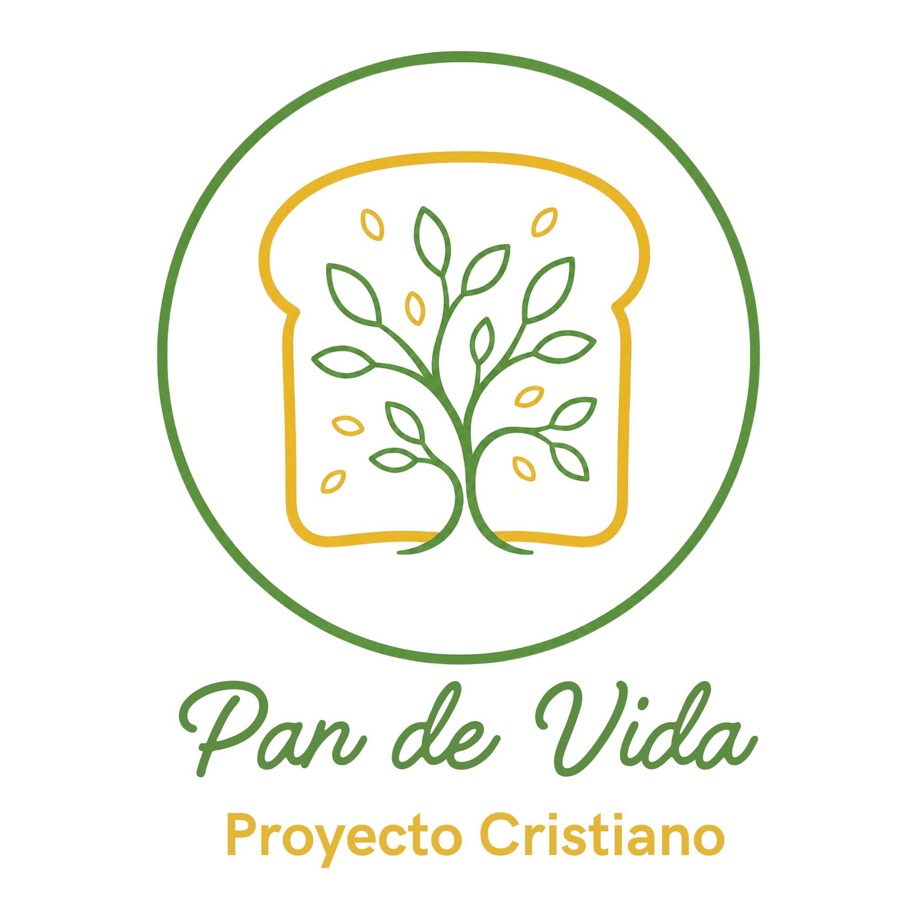
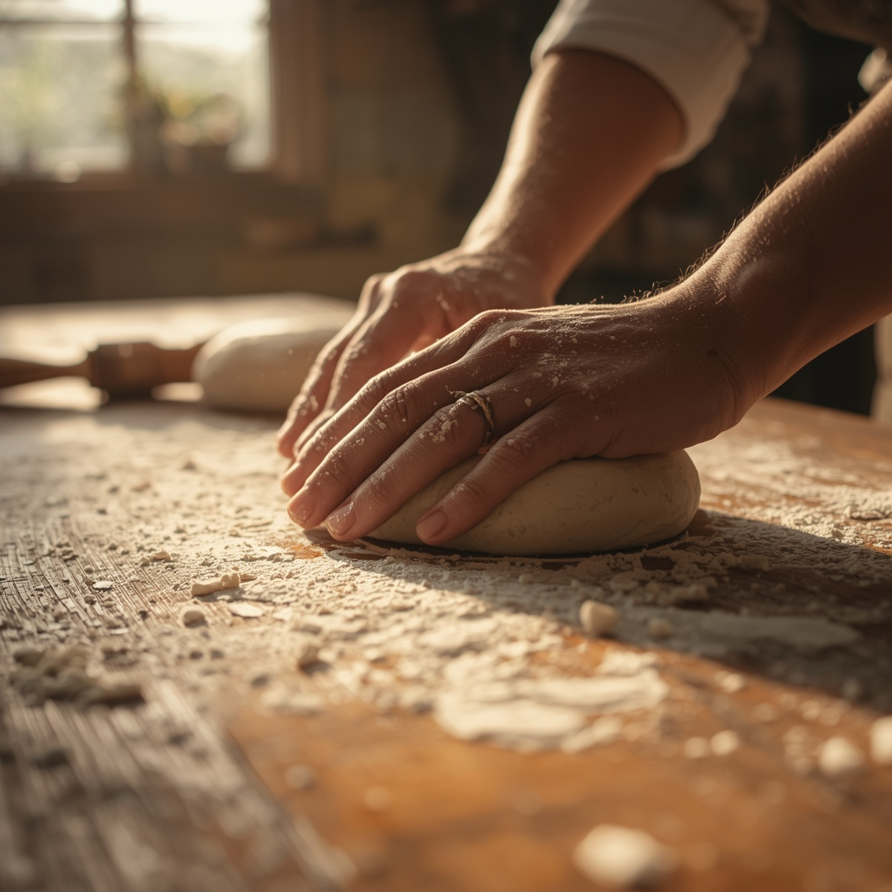
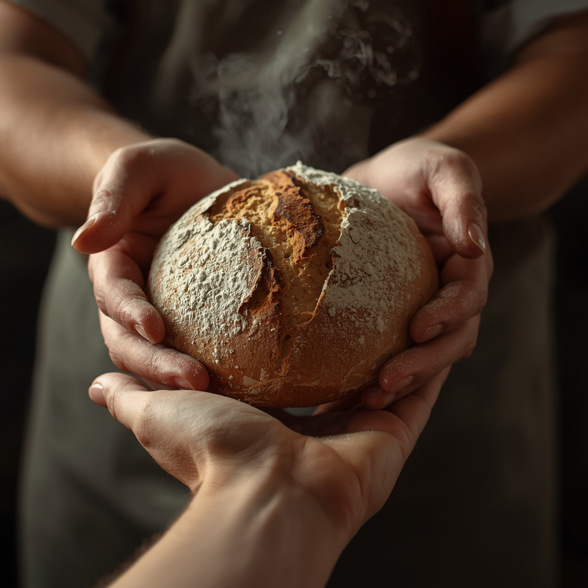
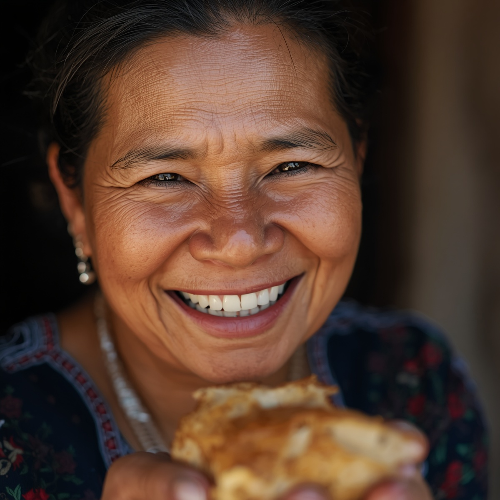

Transformando muros en puentes a través del servicio y el sabor.

Convertir el encierro en una escuela de servicio, donde jóvenes en proceso de reinserción transforman donaciones en esperanza horneada para alimentar gratuitamente a quienes más lo necesitan (pacientes en hospitales).
Escuela técnica donde profesionales donan conocimiento para enseñar panadería a los jóvenes.
Red logística para donaciones recurrentes de insumos básicos (harina, levadura, grasas).
Difusión de testimonios para romper el estigma social de los adolescentes infractores.
Trazabilidad total donde cada donante ve el fruto de su aporte y el progreso técnico.


Ya sea donando una clase maestra, apadrinando un saco de harina o ayudando en logística, tu apoyo hace la diferencia.
Quiero Ayudar